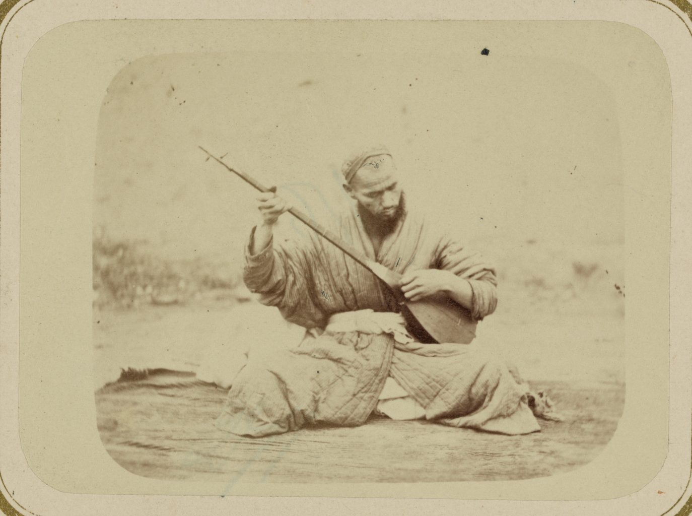
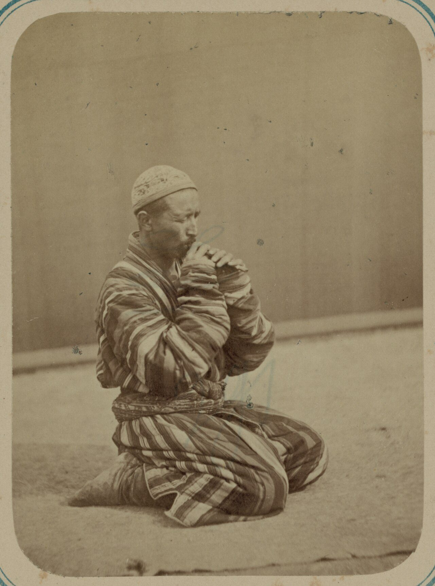
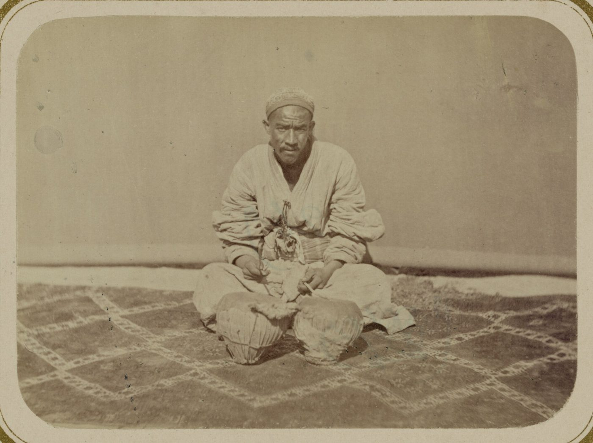
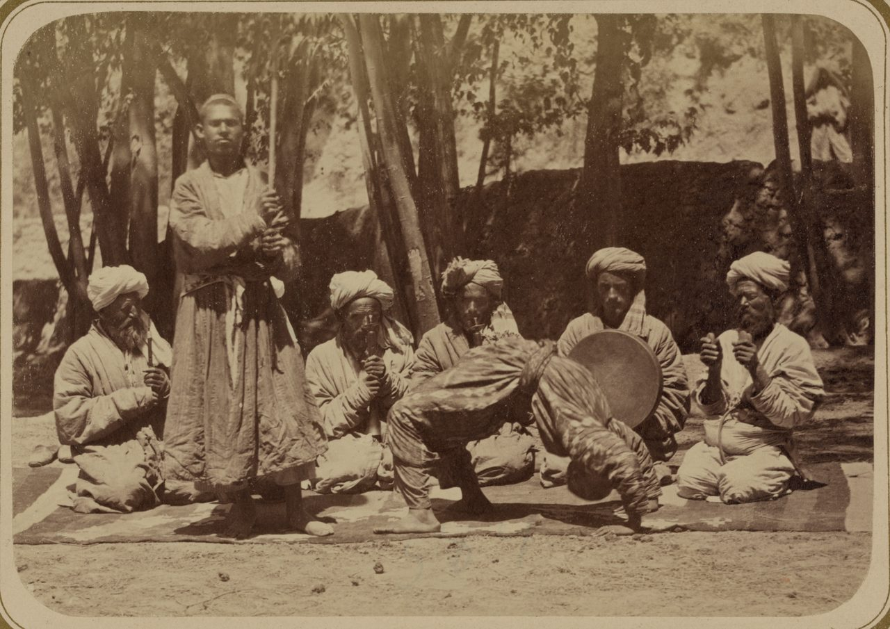

XALQ OG‘ZAKI IJODIDA YO‘LLAR
Xalq yo‘lni faqat yurgan emas — uni aytgan ham. Maqolda yo‘l qoida bo‘lib qolgan, dostonda esa butun voqeaning o‘zagiga aylangan.
Shuning uchun yo‘l xalq ijodida oddiy manzara emas, balki hayotning o‘zi haqidagi gapga aylangan.
Maqolni bosing — uning ma’nosi va yo‘lga aloqasi chiqadi.

b01.jpgTurkiston albomidan olingan surat, 1865–1872-yillar. Bu — xonliklar davriga eng yaqin fotografiya: shu qo‘l va shu cholg‘u bilan doston aytilgan. Baxshi bir kechada yuzlab misrani yoddan kuylagan.
Har maktabning o‘z ohangi va o‘z yo‘li bor edi. Doston yo‘l bilan tarqalgan: baxshi yurgan joyda variant ham tug‘ilgan.

b03.jpgKarnay ovozi uzoqdan eshitilgan: u bayram va to‘y boshlanganini butun mahallaga bildirgan. Yo‘lda kelayotgan karvon ham shu ovoz bilan kutib olingan.
Bu dostonlarning deyarli barchasida qahramon yo‘lga chiqadi. Yo‘lsiz doston yo‘q.
Dostondagi safar bosqichlarini bosib ko‘ring.

b05.jpgZarb — dostonning ritmi. Nog‘ora qahramonning oti chopganini, jang boshlanganini va yo‘l sur’atini tinglovchiga yetkazgan.
Bu rivoyat baxshichilikning eng muhim xususiyatini ko‘rsatadi: doston qotib qolgan matn emas, u har ijroda qayta tug‘ilgan.

b02.jpgDoston har doim yolg‘iz aytilmagan: baxshi yoniga sozandalar qo‘shilgan. Ijro bir necha kecha davom etgan — tinglovchi qahramon bilan birga yo‘l bosgan.
Xalq tasavvurida safarda nima muhimroq — yo‘lni bilishmi yoki hamrohmi?
Maqollarda «yo‘ldosh» yo‘lning o‘zidan ko‘ra ko‘proq tilga olinadi. Karvon yo‘lida yolg‘iz yurish shunchaki qiyin emas, xavfli edi.
Og‘izdan og‘izga o‘tgan yo‘l XX asrda qog‘ozga tushdi. Aks holda u ham eski karvon yo‘li kabi yo‘qolib ketishi mumkin edi.
Maqol qisqa aytadi, doston uzoq kuylaydi — ammo ikkalasi ham bitta narsani takrorlaydi: odam yo‘lda ochiladi.